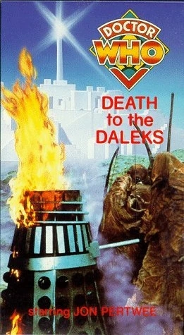
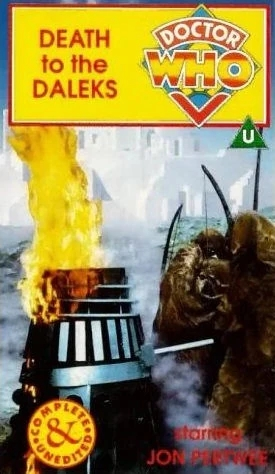
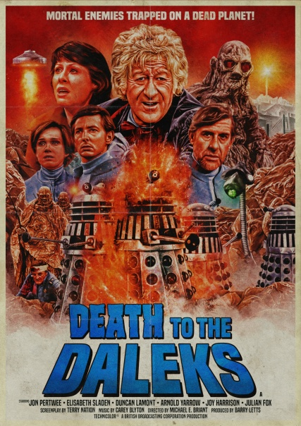

Эра Третьего Доктора (11 сезон)
<<< НАЗАД ||| 3. Смерть далекам ||| ДАЛЬШЕ >>>
Субтитры: Русские и Английские |  |
|---|
Дата выхода: 23 февраля - 16 марта 1974
Формат: 4 эпизода по 25 мин.
| Все эпизоды сохранились в цвете (видеокассета PAL 2") 1-й эпизод найден в 1981 г. в 525-строчном формате NTSC * Впоследствии, в 1991 г. найдена видеокассета в 625-строчном формате PAL |
|---|
 |
ТАРДИС теряет энергию и аварийно приземляется на планете Экссилон. Там Доктор и Сара сталкиваются с двумя угрозами сразу: с местными экссилонцами, которые поклоняются загадочному белому городу и приносят ему жертвы, и с далеками, которым тоже срочно нужен редкий минерал — парриниум: он способен остановить смертельную космическую чуму, поразившую и людей, и самих далеков. На фоне этого разворачивается напряжённая гонка: все хотят добыть парриниум, но белый город высасывает энергию из всего вокруг, отключая оружие, корабли и даже технологии далеков. Серия известна тем, что впервые ставит Доктора и далеков по одну сторону баррикад — пусть и вынужденно — и показывает далеков уязвимыми, когда их техника перестаёт работать.
  VHS - 1987 (фильм) / 1995 (эпиз.) |  DVD - 18 июня 2012 * Версия в нашей группе |
|---|



Трейлер: